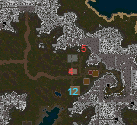
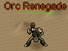
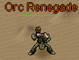
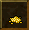
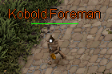
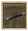

Silvest Valley
Quest NPCS
Silvest
Cliffside Village
Eastwatch
The Wisdom of Wizards
Silvest Quest
Knight of Silvest
| Quest Log | Location |
|---|---|
| Silvest Valley | Silvest |
| Difficulty | Skills |
|---|---|
| Apprentice | Combat |
| NPC Quest Start | Monster | Reward |
|---|---|---|
| Lord Aelfwyn | Many different creatures |

 ">
">
">
">


 ">
">
|
 Speak to Lord Aelfwyn
Speak to Lord Aelfwyn
Lord Aelfwyn: I do not speak to those who have not pledged allegiance to Silvest...begone!
You must go speak to the Silvest Steward next to the spawn gate.
Silvest Steward: Welcome to Silvest! You made an excellent choice in comeing here He shakes your hand I'm the Steward of Silvest. I'm here to help Aelfwyn manage the city and ensure it has what it needs.
I've been doing this for many years, but never before have I seen someone with such wisdom and energy! In fact, you'd fit right in around here. Yes, I can see it now! Why don't you align with our city and help make it the best in the land? There are incredible perks. All Silvest citizens are granted 1 extra orb of intelligence... err not that you'd need it. Your intelligence can reach 101, too. Well, you can
only pick one city... He mumbles something about the Orcs and Elves ...for tax reasons. It's very complicated.. Just let me know and I'll sign you up right away! Do you wish to align with Silvest?
Player: Yes!
Silvest Steward: Splendid! Our city is already better for it! Well, no time to chat when there's work to be done. See you around! Oh don't forget to see Aelfwyn in the town hall.
- You have gained the intelligence of Silvest!
- You have gained 500 faction with the city of Silvest!
- 2,750 Experience Pool experience may very
Speak to Lord Aelfwyn.
Lord Aelfwyn: Greetings! Ah...A loyal servant of Silvest... The times are dire! Forces of evil are threatening our fair city. Lotor and his Knights are doing the best they can, but I fear it is not enough. For the future of Silvest I need brave warriors willing to seek out and slay the foul creatures that plague us... Are you willing to help?
Player: Yes! His evil must be defeated! The task at hand is most dangerous! I believe this evil has been spawned by Talazar himself! Do you dare stand against this Dark Fiend?
Player: Yes! His evil must be defeated!
Lord Aelfwyn: Very good! May Silvest be saved... The task I will give you will test your courage and wisdom! Return to me after Talazar's power has been weakened!
QUEST RECEIVED: Knight of Silvest, Lord Aelfwyn of Sivlest asks you to slay x amount of Creatures.
Head out and kill the required creatue. You will be updated as you kill them.
QUEST UPDATE: Kill x amount more creature for Lord Aelfwyn of Silvest
QUEST UPDATE: Knight of Silvest, Return to Lord Aelfwyn in Silvest!
Lord Aelfwyn: Silvest be praised! You have made the human lands more secure from the evil plague of Talazar... Speak with Lady Aelfwyn about further rewards for your service. She is in Varg, a short journey north and west from Silvest at the Temple of Kuthos. Thank you again...
- You have gained X amount of faction with the city of Silvest
- Ramdon Amounts Experience Pool experience may very
Travel out the west side of silvest to head to Varg.
 Speak to Lady Aelfwyn.
Speak to Lady Aelfwyn.
Lady Aelfwyn: Greetings loyal warrior of Aelfwyn... Honored servant. Here is your reward for your loyal patronage. Continue to serve...
Repeat this quest gaining Faction Points to earn the complete Silvest Set.
- 500 Faction Points Necklace of Silvest
- 800 Faction Points Ring of Silvest
- 1300 Faction Points Gloves of Silvest
- 1800 Faction Points Belt of Silvest
- 2300 Faction Points Helm of Silvest
- 2800 Faction Points Boots of Silvest
- 3300 Faction Points Cloak of Silvest
- 3800 Faction Points Guardian of Silvest
- 4300 Faction Points Leggings of Silvest
- 4800 Faction Points Armor of Silvest
Quest Complete
You have gained faction with Silvest for your heroic work! See Lady Aelfwyn in Varg about a reward.Spice It Up
| Quest Log | Location |
|---|---|
| Silvest Valley | Silvest |
| Difficulty | Skills |
|---|---|
| Apprentice | Tradeskill |
| NPC Quest Start | Reward |
|---|---|
| Ceric |

|
 Speak to Ceric.
Speak to Ceric.
Ceric: Greetings, traveler! Perhaps you're looking to earn a little coin? My brother Cearl and I have been looking to spice up the menu here at the Triddle for some time, but I simply can't leave my establishment. If you have the talent for fishing, what say you to helping a busy man?
Player: I'm always looking for extra coin!
Ceric: Fantastic! I think a nice, flaky fish would be just the thing for hungry belies come out of the dark woods for sup! Bring me Bluefin so I can experiment. 50 should be enough for now. You should be able to find plenty of them at the docs to the south. Good luck!
QUEST RECEIVED: Spice it Up, Fish for 50 Bluefin for Ceric, owner of Triddle's Tavern in Silvest.
Head south to the dock with your fishing pole
 Stand next to the water source click on your fishing pole then on the spot in the water you want to try and catch a fish. Keep fishing until you get all 50 Bluefin.
Stand next to the water source click on your fishing pole then on the spot in the water you want to try and catch a fish. Keep fishing until you get all 50 Bluefin. 
QUEST RECEIVED: Spice it Up, You have collected enough Bluefin to complete the quest.
Ceric: Ah, welcome back! I was hoping to see you - and how many bluefin have you got there? you have the fish? Splendid! This will bring in more customers, I'm sure of it! And as for your reward... He reaches beneath the counter nad produces a brown sack that clinks as it's placed on the counter and nudged in your direction. I appreciate the help. Now to test out some new dishes!
- Gold Received: 500
- 88,000 Experience Pool experience may very
Ceric has paid you 500 gold for your help.
Quest Complete
Join Forces
| Quest Log | Location |
|---|---|
| Silvest Valley | Silvest |
| Difficulty | Skills |
|---|---|
| Apprentice | Combat |
| NPC Quest Start | Reward |
|---|---|
| Raglnak |


|
Speak to Raglnak.
Raglnak: Good day, young adventurer. I hope your journeys are gratifying. BARTENDER! BARTENDER! Antoher ale! He grumbles The evil upon this land has made my expeditions more dependent upon my swordsmanship. Do you agree?
Player: Yes, I have noticed the same, Raglnak
Raglnak: Aye, indeed you have, lass! I cannot even chop wood in the forest without keeping my sword in the other hand... Dark times, indeed. Those of us with good and noble intentions should band together! He raises his glass to you Let us join our strength to eliminate the growing evil! I shall train you in the art of Sword Combat... And you .. You shall listen to my
instruction, and humor me with your naive questions! Ho Ho! What say you?
Player: Yes, let us slay evil together!
Raglnak: Admirable decision! Bartender! Give this adventurer an ale! Thy training begins now. Take this practice sword...
You must kill one kobold, one snake, and one orc renegade with this sword. This will prove you have the agility and courage to advance in sword combat. Return to me when your deeds are accomplished! I myself have much work to attend to in town...
QUEST RECEIVED: Join Forces, You leave Silvest with Raglnak's practice sword. Use it to kill one Sanke, one Kobold, and one Orc Renegade.

 
Head out of town there are plenty of Snakes around Silvest. The Kobolds are northeast of silvest around the mountain towards Silvest Lake. The Orc Renegades are located in a cave in the southern mountains. Head south to the docks then continue east following the mountain north to the cave.
As you kill each type you will be updated.

Head out of town there are plenty of Snakes around Silvest. The Kobolds are northeast of silvest around the mountain towards Silvest Lake. The Orc Renegades are located in a cave in the southern mountains. Head south to the docks then continue east following the mountain north to the cave.
As you kill each type you will be updated.
QUEST UPDATE: You have vanquished an Snake for the Sword Quest!
QUEST UPDATE: You have vanquished an Kobold for the Sword Quest!
QUEST UPDATE: You have vanquished an Orc Renegade for the Sword Quest!
When you have completed the task you will be updated one more time.
QUEST UPDATE: Join Forces, You have completed your training. Return to Raglnak!
Raglnak: Let's see what you have accomplished... You have killed a Kobold! You have killed the Snake! You have killed the Orc Renegade! You have proven your worthiness to wield a real warrior's weapon. Here is a sword for your accomplishments and if anything, you now have the ability to practice on your own. Fare thee well, young adventurer.
- ITEM Received: Heavy Short Sword
- 5,500 Experience Pool experience may very
You have proven yourself to Raglnak and received a heavy sword in return!
Quest Complete
Put Them Down
| Quest Log | Location |
|---|---|
| Silvest Valley | Silvest |
| Difficulty | Skills |
|---|---|
| Apprentice | Combat |
| NPC Quest Start | Reward |
|---|---|
| Jodrich |
|
 Speak to Jodrich
Speak to Jodrich
Jodrich: Jodrich eyes you up and down He laughs nervously No need to come so close, there, hehehehehe... Though, I could use your help... I have a problem, you see. I'm terrified of bats and an even worse variety has been becomeing increasingly common around Silvest lately...
Please. I need you to put them down!!! They're calle.. He gulps ...Sonic Flyers.
Player: Yes, let us slay evil together!
Jodrich: My gratitude, stranger! I don't think i can sleep until you do. He wrings his hands Don't underestimate them! And, please, come back safely. I'm scared to put a number on it, but to be fair, lets agree that you will kill 50 of those things.
QUEST RECEIVED: Put Them Down, Slay 50 Sonic Flyers for Jodrich of Silvest.
 The Sonic Flyers spawn near the east side of Sivlest near the mountain range. As you slay them your will be updated.
The Sonic Flyers spawn near the east side of Sivlest near the mountain range. As you slay them your will be updated.
QUEST UPDATE: You have killed 50 Sonic Flyers for Jodrich! When you have killed them all you will be updated one last time.
QUEST UPDATE: Put Them Down, Return to Jodrich in Silvest!
Jodrich: You did it? I'm so grateful! Now I can sleep peacefully knowing that they won't be able to get me in the night! Or at least it will buy me enough time to collect some firewood for my hearth... Here... I have some money I've save up. It should be a suitable reward. He hands you a sack of coin I just hope they don't bother me anymore... Good luck with your travels!
- GOLD RECEIVED: 1000
- 11,000 Experience Pool experience may very
Quest Complete
Jodrich has rewarded you for dealing with his problem.Nest of Pests
| Quest Log | Location |
|---|---|
| Silvest Valley | Silvest |
| Difficulty | Skills |
|---|---|
| Apprentice | Combat |
| NPC Quest Start | Reward |
|---|---|
| Howard Kaps |
|
 Speak to Howard Kaps.
Speak to Howard Kaps.
Howard Kaps: I went out for a stroll and came across a bed of fierce Fire Ants. These ants are not the usual garden-variety..the sting is so painful it lays you up in bed for days! To think that our good town could be victimized by these pests...it's maddening! Help exterminate the mound by killing 100 of them for me!
Player: I shall crush them underfoot!
Howard Kaps: That's the spirit! King Lotor would be wise to recruit more like you. Now then. The nest is to the northwest, near the mountains. Remember - you must kill them in their nest!
QUEST RECEIVED: Nest of Pests, Exterminate 100 Fire Ants for Howard Kaps, a concerned citizen of Silvest.
 Travel northeast to the Fire Ant mound. You need to kill them within the area of their mound. As you are killing them you will be updated.
Travel northeast to the Fire Ant mound. You need to kill them within the area of their mound. As you are killing them you will be updated.
QUEST UPDATE: You've killed 100 Fire Ants for Howard Kaps
Once you have kill all of them you will be updated one last time.
QUEST RECEIVED: Nest of Pests, Return to Howard Kaps, in Silvest Guard Outpost, with news of the Fire Ant extermination.
Howard Kaps: The mound has been cleansed! It is safe to stroll the paths of Silvest once again! Take this gold as a token of my appreciation!
- GOLD RECEIVED: 2500
- 27,500 Experience Pool experience may very
Quest Complete
You exterminated the Fire Ants for Howard KapsThe Wrong Crowd
| Quest Log | Location |
|---|---|
| Silvest Valley | Silvest |
| Difficulty | Skills |
|---|---|
| Apprentice | Combat |
| NPC Quest Start | Reward |
|---|---|
| Howard Kaps |
|
Speak to Howard Kaps.
Howard Kaps: It's a good day to stroll in the mountains to the north of town! perhaps you would like to help with another matter? My son fell in with a foul group who call themselves 'Cultists'. I was able to pry him from their grasp, but not before thye had stolen all of his possessions... .. including a ring
that my father had given him. If you are willing (and I think you are able) please venture to the west to their temple and reclaim this ring.
QUEST RECEIVED: The Wrong Crowd, Retrieve the Kaps family ring from the cultist temple west of Silvest.

 The Cultist lair is just west of Silvest. When you get their just kill them until you find the ring. As you kill them you will be updated that you didn't find the ring. You search the body, but don't find anything. When you find the key you will be updated.
The Cultist lair is just west of Silvest. When you get their just kill them until you find the ring. As you kill them you will be updated that you didn't find the ring. You search the body, but don't find anything. When you find the key you will be updated.
QUEST UPDATE: The Wrong Crowd, You fond the Kaps family ring! Return to Howard Kaps.
Howard Kaps: It's a good day to stroll in the mountains to the north of town! You fond the ring! Veldan be praised! Take this as a small token of my thanks for your service!
- GOLD RECEIVED: 5,000 Gold
- 49,500 Experience Pool experience may very
Quest Complete
You returned the family ring to Howard KapsJuicy
| Quest Log | Location |
|---|---|
| Silvest Valley | Silvest |
| Difficulty | Skills |
|---|---|
| Apprentice | Traveling |
| NPC Quest Start | Reward |
|---|---|
| Schrute | EXP |
 Speak to Schrute.
Speak to Schrute.
Schrute: I need someone to deliver news about this year's crop of beets ot my cousin Mose in Vrethpool. Tell him the harvest was quite good and he should be expecting his annual supply of beet juice within the month!
Player: Beet juice, you say? Well...
Schrute: Good, good. I've plenty work to tend here with the beet harvest. My hands will be pink for months!
QUEST RECEIVED: Juicy, Schrute of Silvest asked you to tell Mose in Vrethpool about his terrific beet harvest.
Schrute: The beet crop is in? oh happy day! I can't wait to taste the sweet nectar of Schrute's beets!
- 5,500 Experience Pool experience may very
Quest Complete
You delivered the juicy news to Mose.Quite Entranced
| Quest Log | Location |
|---|---|
| Silvest Valley | Silvest |
| Difficulty | Skills |
|---|---|
| Apprentice | Searching & Combat |
| NPC Quest Start | Reward |
|---|---|
| Etrois |

|
 Speak to Etrois.
Speak to Etrois.
Etrois: Who's there??? I hear your footsteps approach...though you are not known to me... She draws a dagger
Player: Peace! I am not an enemy!
Etrois: Excuse me for being so hostile. She sheaths her dagger I wasn't raised that way, I assure you! Since those cursed marsh lights took my sight, I have become quite fearful...
Option: 1
Player: Marsh lights?
Etrois: Aye, marsh lights. Tis a mystical green light that rises up out of the swampy lands at night. I became quite entranced with them... Gandmam says that evil fairy folk live inside them and wish us ill. I didn't want to believe her, though now I know better! I...hate to bother you..but I wonder...I heard there could be a cure for my disease.
I need a small assortment of items for this recipe, but I cannot collect it myself, obviously.
Option: 2
Etrois: She nods It was difficult at first, but I've become accustomed to my life. Do not feel sad... She smiles cheerfully Still, I do miss seeing beautiful magic spells, and lovely flowers... I...hate to bother you...but I wonder... I heard there could be a cure for my disease. I need a small
assortment of items for this recipe, but I cannot collect it myself, obviously.
Player: Say no more. I will help find a cure, lady.
Etrois: Her face brightens What hope I have! Thank you, kind soul! First, you must gather a goodly number of bloodroot. By foraging, of course. I hear it has other healing properties as well... I heard Father say that he had used it on his wounds, once.
QUEST RECEIVED: Quite Entranced, Forage in the wilderness and collect 43 Bloodroot for Etrois of Silvest.
Grab your foraging stick  and start foraging any where you can untill you collect 43 bloodroot.
and start foraging any where you can untill you collect 43 bloodroot.  When you have them all you will be updated.
When you have them all you will be updated.
QUEST UPDATE: You have collected enough Bloodroot to complete the quest.
Return to Etrois with the bloodroot.
Etrois: Is that you? She inclines her ear in your direction I hope you fare well in your quest to find bloodroot... Ah, bloodroot! It smells so fresh! I do not envy your next task... That is, if you still want to help me. I next need a small nuber of scorpion stingers...
QUEST UPDATE: Quite Entranced, Harvest 23 Scorpion Stingers for Etrois.
- 1,650 Experience Pool experience may very
Head outside of town and kill scorpions untill you collect enough Scorpion Stingers.

QUEST UPDATE: You have collected enough Scorpion Sting to complete the quest.
Etrois: Ah, I thought that was you! And you are back with scorpion stingers, yes? She counts the stingers This is terrific! All 23. I cannot bear to be near those horrid scorpions...ugh! Nasty, nasty creatures. Now I almost have it! I just need a small handful of toad eyes. 13. Plague toads are most common in the woods. It should not take very long! Though I am curious about how you will get them out of the head...
QUEST RECEIVED: Quite Entranced, Harvest 13 Toad Eyes for Etrois.
Head out to the Cultist Lair west of town. Kill Plague Toads untill you collect enough Toad Eyes.

QUEST UPDATE: You have collected enough Toad Eye to complete the quest.
Etrois: Back again, I see - or here, rather! You have returned with toad eyes, I hope? She collects the components in here apron Now I must spend some time preparing this tincture... Thank you! Thank you again, I say! The gods have heard my prayer - I will no longer be the outcast! Though I have not much to reward you I did find this orb in the dust under the troughs here. I thought it felt heavy, and interesting... If nothing else, you could sell it. Fare well, and may your journeys be rewarding!
Etrois hands you an orb which swirls with alchemical magic.
- ITEM RECEIVED: Mystic Orb of Alchemy
- 22,000 Experience Pool experience may very
Quest Complete
Etrois rewarded you for your help with a strange object she found on the groundSomething's Bugging Sozal
| Quest Log | Location |
|---|---|
| Silvest Valley | Cave north of Silvest |
| Difficulty | Skills |
|---|---|
| Apprentice | Combat |
| NPC Quest Start | Reward |
|---|---|
| Sozal | "> |
 Speak to Sozal.
Sozal: Hmm...aloner, I see... As am I. He gestures to the entrance of the cave Inside this cave are slugs most foul... If you would take care of them for me, you shall be rewarded...
Speak to Sozal.
Sozal: Hmm...aloner, I see... As am I. He gestures to the entrance of the cave Inside this cave are slugs most foul... If you would take care of them for me, you shall be rewarded...
Player: Indeed! The fouler, the better!
Sozal: Yes, you do look like the kind that would enjoy that sort of thing. Very well! Kill 40 slugs before you return!
QUEST RECEIVED: Something's Bugging Sozal, Take care of 40 Cave Slugs for the hermit Sozal in the coastal cave northwest of Cliffside.
 Head in to the cave and kill the 40 Cave Slugs. As you are killing them you will be updated.
Head in to the cave and kill the 40 Cave Slugs. As you are killing them you will be updated.
QUEST UPDATE: You have killed 40 Cave Slugs for Sozal!
When you have killed all 40 you will be updated one final time.
QUEST UPDATE: Something's Bugging Sozal, Return to Sozal!
Sozal: You took care of the slugs? Take this gold as a reward. I have another task for you... I'm sure you noticed the Cave Spiders while you were venturing in the cave. Slay 50 of them. Beware, their venom has a nasty bite!
- GOLD RECEIVED: 3,000 gold
 Head in to the cave and kill the 50 Cave Spiders. As you are killing them you will be updated.
Head in to the cave and kill the 50 Cave Spiders. As you are killing them you will be updated.
QUEST UPDATE: You have killed 50 Cave Spiders for Sozal!
When you have killed all 50 you will be updated one final time.
QUEST UPDATE: Something's Bugging Sozal, Return to Sozal!
- ITEM RECEIVED: Ring of Sozal
- 16,500 Experience Pool experience may very
Quest Complete
You were richly rewarded for helping SozalThe Lake
| Quest Log | Location |
|---|---|
| Silvest Valley | Outpost north of Silvest |
| Difficulty | Skills |
|---|---|
| Apprentice | Combat |
| NPC Quest Start | Reward |
|---|---|
| Karter Jons |
|
Speak to Karter Jons.
Karter Jons: To the east there is a beautiful lake... It has been befouled by Kobolds! Find their fort on the north isde of the lake and eliminate 50 of the Pests!
Player: That's terrible! I will hunt the creatures.
Karter Jons: A right an' noble thing to say!
QUEST RECEIVED: The Lake, Kill 50 Kobolds near the Silvest Lake, found east of Silvest.
Head east to the lake and kill 50 Kobolds. As you are killing them you will be updated.
QUEST UPDATE: You have kill 50 Kobolds for Karter Jons
When you have killed all 50 you will be updated one final time.
QUEST RECEIVED: The Lake, Return to Karter Jons, whom you met in the guard post north of Silvest.
Karter Jons: The Kobolds have been humbled by your hand, I see! You must accept this gold as a token of my respect for you. Return to me once you are rested. I may have another task for you...
- GOLD RECEIVED: 3,000 Gold
- 27,500 Experience Pool experience may very
Quest Complete
You were richly rewarded for helping Karter Jons. Return to him for more work.The Fort
| Quest Log | Location |
|---|---|
| Silvest Valley | Outpost north of Silvest |
| Difficulty | Skills |
|---|---|
| Adept | Combat |
| NPC Quest Start | Reward |
|---|---|
| Karter Jons | EXP |
Speak to Karter Jons.
Karter Jons: I've heard news that the Kobolds are going to further expand their base! The guards recently caught a stray and made him bark. You should go back to the Kobold Fort and find the pages of their plans. These plans can be found on the ones they call Brigands!
QUEST RECEIVED: The Fort, Search Kobold Brigands near Silvest Lake to find 3 pages of the Kobold Fort plans.
 Head east to the lake and kill Kobold Brigands. As you are killing them you will get messages.
Head east to the lake and kill Kobold Brigands. As you are killing them you will get messages.
You don't seem to find anything that Karter Jons could use...
Once you find a page you will be updated.
QUEST UPDATE: You've found the first page of the Kobold plans!
QUEST UPDATE: You've found the second page of the Kobold plans!
When you find the last page you will be updated for the last time.
QUEST UPDATE: The Fort, You've found the plans to expand the Kobold Fort! Return to Karter Jons!
Karter Jons: The plans! These look to be very useful. unfortunately, I can't make heads or tails out of them... Take the plans to Wilson Johnson in Hothbra. He is an expert in their language!
- ??? Experience Pool experience may very
Quest Complete
Bring the plans to Wilson Johnson in HothbraThe Attack
| Quest Log | Location |
|---|---|
| Silvest Valley | Hothbra |
| Difficulty | Skills |
|---|---|
| Adept | Combat |
| NPC Quest Start | Reward |
|---|---|
| Wilson Johnson | EXP |
 Speak to Wilson Johnson in Hothbra.
Speak to Wilson Johnson in Hothbra.
Wilson Johnson: Hmmmm...these Kobold Fort plans look interesting. It seems they ae expanding the fort in order to mass their forces. This could only mean some form of attack on Silvest! Return to Silvest and speak with Guard Captain Lowes about this at once!
QUEST RECEIVED: The Attack, Tell Guard Captain Lowes in Silvest about the Kobold Attack.
 Return to Silvest to speak to Captain Lowes.
Return to Silvest to speak to Captain Lowes.
Guard Captain Lowes: So you are the one Karter Jons spoke of. He must have told you about the Kobold threat to our city. Wai, what is that? News from the north? What? He peers off in the distance The horde approaches!! We are severely undermanned.
You must fight for Silvest! You must slay 10 of their ranks in the next 5 minutes. Follow the road to the north. They come! Save Silvest!
QUEST UPDATE: The Attack, Slay 10 Kobolds in 5 minutes.
Head north and kill 10 of the Kobolds before the 5 minutes are up. You will be updated as you kill them.
QUEST UPDATE: You have killed 10 Kobolds for Guard Captain Lowes!
When you have killed all 10 you will be updated one final time.
QUEST UPDATE: The Attack, Return to Guard Captain Lowes in Silvest!
Guard Captain Lowes: You return alive! We need brave warriors like you here in Silvest. I know we cannot offer you enough, however, to join the ranks of our guards... You will have to have our thanks as your reward...
- Your faction ranking with Sivlest has increased by 500!
- ??? Experience Pool experience may very
Quest Complete
You helped defeat the Kobold hord!Of Kobold
| Quest Log | Location |
|---|---|
| Silvest Valley | Cave North of Kobold Fort |
| Difficulty | Skills |
|---|---|
| Adept | Combat |
| NPC Quest Start | Reward |
|---|---|
| Galen | "> |
Speak to Galen in the cave north of the Kobold fort. Aye, a friendly face for once! I'd welcome ye, but I have naught to spare for food, nor a place to rest upon. But I could help ye if ye wish to know of the kobolds taht overrun the castle...
I can tell by the gleam in thine eye that ye've had a run in with the sneaks! Cowards, the whole breed. When ye cut one down, five more appear! If ye should attack the kobold fort, though, t'would put the fear of man in them. He leans in Oh, aye, there is another way in...
Seek out the Silvest Mines... inside the windy caverns is a path which will take ye underneath the kobold fort. Head east inside the caverns and you shall surely find the way, though the path is hidden by secret walls... and if ye go that way, perhaps yed like to help me with a little Kobold problem?
Once the deed is done, I will bestow an item from my treasury. I managed to escape with these few things... but I will gladly give them away for a chance to be back in my home! at the center of the fort, in the old dining hall once aglow with laughter, and feasts, and stories of old...
Alas! To speak of these happy days increases my pain... now there lives a pompous old wretch which calls itself the Kobold King. Slay it and I will reward thee! Very good a seasoned warrior as theyself might find it an even match. still... be cautious. 'Tis a crafty evil behind that door!
QUEST RECEIVED: Of Kobolds, Enter the Kobold Fort through the Silvest mine and slay the Kobold King for Galen the outcast.
You have two ways to get in to the Kobold fort. Come in from the Silvest mines north of Cliffside or the Kobold outpost to the west next to the shore. Cliffside is the very long route and encounter more monsters along the way.
- OPTION: 1 Silvest Mine
- OPTION: 2 Krazak Cove
OPTION: 1
 Silvest mine route is a much longer route, and more dangerous. You will run in to Skeleton Warriors, Shadows, and Kobold Miners. If you don't follow the map you could get lost as well.
Silvest mine route is a much longer route, and more dangerous. You will run in to Skeleton Warriors, Shadows, and Kobold Miners. If you don't follow the map you could get lost as well.
OPTION: 2
Leave the cave head south to Fort Eastwatch, from there follow the coast north to reach Kavic Cove. In Kavic Cove you will find a samll building with a ladder this is your entrance to the Silvest Mines.
Head west till you get to a stone structured area with a ladder to go up in to the Kobold Fort. In the fort head west, then south, back to the east, enter the door then north to find the King Kobold
Kill him and be updated to return to Galen for your reward.
QUEST UPDATE: King Kobold killed. Return to Galen
QUEST UPDATE: Of Kobolds, In a cave near Kobold Fort, Galen awaits news of the Kobold King's death.
The wretched King is dead, you say? Eh? Hmm... it may be so... He scratches his beard Talazar's evil bent spawned endless mischief in our land... Enough talk! Let us celebrate! Here is the key to my chest. Open it to get thy rewrd!
- ITEM RECEIVED: Outpost Guard Leggings
- ??? Experience Pool experience may very
Quest Complete
Galen shared his last remaining possessions with you, the Outpost Guard Leggings.For Those Who Are Brave
| Quest Log | Location |
|---|---|
| Silvest Valley | Cliffside |
| Difficulty | Skills |
|---|---|
| Apprentice | Combat |
| NPC Quest Start | Reward |
|---|---|
| William the Young | EXP |
Speak to William the Young Hello. I am William the Young. That is what my fater calls me. He is a great warrior! Yes! He is great warrior! He even went to the Castle of Kobolds!
The castle of Kobolds is where the Kobold King lives. He is an evil Kobold taht has gone mad! All the kobolds follow him and think he is their god. TeeHee, silly kobolds. Could you sear for my fater, Struglar?
He went into the Silvst Mine many moons ago to rid it of the undead that live in there. I miss him so much. Oh, thank you! Thank you! Please come back and tell me after you have found him! You are truly kind.
QUEST RECEIVED: For Those Who Are Brave, Find William the Young's father Struglar, who entered the Silvest Mines.
Go north to the Silvest mines. There are Skeleton Warriors you will have to confront. Follow the map to find the location of Struglar. Struglar has been killed and you find his remains. 
This is the body of Struglar, the father of William. You realize you must inform William of the bad news.
QUEST UPDATE: For Those Who Are Brave, William the Young's fater is dead. Now you must inform him of this bad news..
Hello! Do you have news of my father? No!! it cannot be! You are right. I should not be sad. I should be proud of my father and follow in his footsteps! I shall grow bigger and strong and fight for what he believed in. I thank you for finding him.. It must have been dangerous. you are an honorable person.
- 16,500 Experience Pool experience may very
Quest Complete
Your kind words encouraged William the Young to want to become a warrior like his father.Supply Problems
| Quest Log | Location |
|---|---|
| Silvest Valley | Eastwatch |
| Difficulty | Skills |
|---|---|
| Apprentice | Explore/Combat |
| NPC Quest Start | Reward |
|---|---|
| Commander Garwyk | EXP |
Speak to Commander Garwyk: Hail, traveler! It isn't too often we see visitors here in Fort Eastwatch. What brings you to me?
Player: Have you any tasks?
Commander Garwyk: Perhaps you would be willing to aid me. We are in constant need of new supplies. And with delays caused by unsfe roads, marauding bandits, and fell creatures. I need couriers to bring in goods for my men. Would you be willing to aid me and bring supplies to Fort Eastwatch?
Player: Aye, I can assist you.
Commander Garwyk: Very good, very good indeed. Go and speak to Madison in Silvest. She will be able to help with our supply problems.
QUEST RECEIVED: Supply Problems, Deliver a message to Madison in Silvest from Commander garwyk of Eastwatch.
Speak to Madison: You were sent by Commander Garwyk? He and his men of Fort Eastwatch are always in need of certain supplies. I can be of some assistance. My husband, Coenred, runs this general Store here in Silvest. He's tending the shop right now. *Madison skims the list of supplies... Unfortunately, the supplies that Commander Garwyk needs, we have none of... Hmmm, however, if you seek out... hmmm, what was his name? bless me, I can't remember his name, but he's a dark fellow who lives in Cliffside, and he dresses in black. he should be able to give you a sack of supplies to take back to Fort Eastwatch.
- 16,500 Experience Pool experience may very
Quest Complete
Your kind words encouraged William the Young to want to become a warrior like his father.Gem Thieves
| Quest Log | Location |
|---|---|
| Krythan | Eastwatch |
| Difficulty | Skills |
|---|---|
| Apprentice | Combat |
| NPC Quest Start | Reward |
|---|---|
| Dalvon Miner |
">
">

|
Speak to the Dalvon Miner: Kobolds! Kobolds! *He kicks a rock* My mine to the south of here is infested with the pests. They are mining all of my rare gems! I will reward you handsomely if you kill 50 the miners...
Option: 1
Player: What are you offering?
Dalvon Miner: I have many fine gems. You will not be disappointed! *He opens a large bag of glittering gems and jewels*
Player: I will help clear the mines!
Dalvon Miner: Bless Arna! You've been sent by the gods, as it were. Oops... Shouldn't say taht with Brother Augustan near. He'll think I want to talk. And don't get me wrong, he's a nice fella, astye go... But I'm here for the gems, not Runic Theology.
Option: 2
Player: It's a deal!
Dalvon Miner: What's that? You will go? It's not oftern I find such a willing hand to venture to the mine. You must need the money! Here, I have some coin to give you now.
- GOLD RECEIVED: 1,000 ">
QUEST RECEIVED: Gem Thieves, Kill 50 Kobold Miners for the Dalvon Miner.
">
The Kobold Miners can be killed in the Dalvon Mine or in the Slivest mine. As you are killing them you will be updated.
QUEST UPDATE: You've killed 50 Kobold Miners for the Dalvon Miner!
QUEST RECEIVED: Gem Thieves, Return to the Dalvon Miner!
Dalvon Miner: You cleaned out the mine!! Here.. I have some gems, as I promise for your reward.
- ITEM RECEIVED: 10 Diamonds
- 25,000 Experience Pool experience may very
Dalvon Miner: Back again, aye? Got the taste of gems, I see. We all did, down in the mine. Didn't see the dead coming from outside, nor the kobolds from inside. After the rune war, many such creatures began to drive us to our towns, behind walls.
*He grumbles* But that is the past. I must get back into the mine, somehow. While you were down there, I was thinking... The Kobolds in the mines are supervised by brutal Kobold Foremen. If you remove them perhaps the Kobolds will scatter like the vermin they are.
Venture into the mine again and slay 50 of these greedy overseers!
QUEST UPDATE: Gem Thieves, Slay 50 Kobold Foreman in the Dalvon Mine.
">
Head back to the dalvon mine to kill the Kobold Foreman. As you are killing them you will be updated.
QUEST UPDATE: You've killed 50 Kobold Foreman for the Dalvon Miner!
QUEST UPDATE: Gem Thieves, Return to the Dalvon Miner!
- ITEM RECEIVED: Gemstone of Dalvon
- 50,500 Experience Pool experience may very
Dalvon Miner: The Gemstone of Dalvon is quite beautiful is it not? There are more treasures farther in, if you care to go. I will warn you however...
If you venture to the bottom of the mine, be prepared for a fight. Those Foreman take their orders from a creature called Master Blaster. You would do us all a favor by slaying this beast!
QUEST UPDATE: Gem Thieves, Kill Master Blaster for the Dalvon Miner.
">
Use the map to find Master Blasters location and defeat him.
QUEST UPDATE: Gem Thieves, Return to the Dalvon Miner!
Dalvon Miner: Master Blaster is dead! I can return to my mine, to my gems, my glorious gems! Thank you! I owe you a reward... Perhaps some of the finest armor to be found on Krythan Island? What would you like?
- OPTION 1: Dalvon Helm ">
- OPTION 2: Dalvon Leggings ">
- OPTION 3: Dalvon Armor ">
Dalvon Miner: *He slips a ring off of his finger and hands it to you.* The ring - that is a trifle. I will easily replace it soon. I must get my supplies together so I can return. Pleae don't bother me now!
- ITEM RECEIVED: Dalvon Miner's Ring
- ITEM RECEIVED: Your Choice Dalvon Helm, Dalvon Leggings, or Dalvon Armor
- 75,000 Experience Pool experience may very
Quest Complete
You helped the Dalvon Miner clear out Kobolds from his claim.The Wisdom of Wizards
| Quest Log | Location |
|---|---|
| Krythan | Silvest |
| Difficulty | Skills |
|---|---|
| Apprentice | Magery |
| NPC Quest Start | Reward |
|---|---|
| Val Clockworks | "> |
Speak to Val Clockworks. Come to play with fire, have we? HAHA! *She laugs maniacally* Yes...you were destined for this path! You see, us wizards are a curious sort. We question. We question the things of power.. of the body.. of the soul.. of the mind, and of nature itself. Our questions bring us power! Enough talk for now!! you must listen.. ask questions of the wizards of this realm. Do you wish to begin this training? Are you? We shall see about that. Seek out the six wizards of Krythan Island. They answer to me and will help instruct you. Return to me once you have fulfilled all that they ask of you.
- Mind Magic Silvest Library (Basement) Nova
- Magic Missile Silvest South Coast Petrim the Peculiar
- Magic Missile Cliffside Maylee Runesong
- Nature Magic Cliffside Culls McGilla
- Body Magic Varg near Mountain Range Disciple of Body
- Soul Magic Fort Eastwatch Kerrigon the Dark
QUEST RECEIVED: The Wisdom of Wizards, Val Clockworks instructed you to seek out and disciple with 6 wizards who inhabit Krythan Island.
Welcome back, fellow wizard... You have done all that they ask. Go forth and form questions of your own; may they lend you power over the world around you!
When you have completed all the Wizards tasks speak to Val Clocksworks She will reward you with the Clockwork Robe.
- Clockwork Robe
- 88,000 Experience Pool experience may very
Val Clockworks gifted you with a Clockwork Robe!
Quest Complete
Disciple of mind
| Quest Log | Location |
|---|---|
| Krythan | Silvest Library (Basement) |
| Difficulty | Skills |
|---|---|
| Apprentice | Mind |
| NPC Quest Start | Reward |
|---|---|
| Nova | "> "> |
Need to be level 15 in Mind skill to start this quest.
Speak to Nova Shhhhh! I know why you are here. Your questions will reveal much about your intentions!
Each options has the same reward just differnt monsters to kill for him.
Item
- ITEM RECIEVED: Wand of Expansion
Reward
- Clockwork Cap
- 33,000 Experience Pool experience may very
- Option: 1 I'm not ready to ask... Speak to him again
- Option: 2 What do you require of me? 40 Cultist
- Option: 3 What great secret have you to share with me? 40 Marsh Lights
- Option: 4 Why are you so grouchy? 40 Orc Renegades
OPTION: 2
QUEST RECEIVED: Disciple of Mind, Learn more about mind magic by hunting 40 cultist with the Wand of Expansion
You seek to know your duty to others. You will never make it as a wizard that way. You answer to none! Follow your own destiny! I shall give you a task that will remind you of the dangers of falling into the power of another's persuasion... I shall give you a wand. Use it to hunt. It shall add to your power...
 Head out to the west of silvest to the Cultist fort. Kill 40 cultist while the Wand of Expansion is equipped. You will be updated as you kill them QUEST UPDATE: you have killed 40 Cultists for Nova the Wizard. When you have kill 40 return to Nova to be rewarded.
Head out to the west of silvest to the Cultist fort. Kill 40 cultist while the Wand of Expansion is equipped. You will be updated as you kill them QUEST UPDATE: you have killed 40 Cultists for Nova the Wizard. When you have kill 40 return to Nova to be rewarded.
OPTION: 3
QUEST RECEIVED: Disciple of Mind, Learn more about mind magic by hunting 40 Marsh Lights with the Wand of Expansion.
You wish to know things that are not for you to know! You must watch yourself lest you fall on the same path as the fallen Rune Warriors... you shall study the ways of the marsh light; it leads many astray. I shall give you a wand. use it to hunt. It shall add to your power...
 Head to the north east of Silvest to Kobold Lake to find the marsh lights. Kill 40 marsh lights while the Wand of Expansion is equipped. You will be updated as you kill them QUEST UPDATE: you have killed 40 Marsh Lights for Nova the Wizard. When you have kill 40 return to Nova to be rewarded.
Head to the north east of Silvest to Kobold Lake to find the marsh lights. Kill 40 marsh lights while the Wand of Expansion is equipped. You will be updated as you kill them QUEST UPDATE: you have killed 40 Marsh Lights for Nova the Wizard. When you have kill 40 return to Nova to be rewarded.
OPTION: 4
QUEST RECEIVED: Disciple of Mind, Learn more about mind magic by hunting 40 Orc Renegades with the Wand of Expansion
Grouchy, you say?? You seek to know the mind of another Commendable. I will IGNORE the insulting nature of your question this time. Study the mind of an enemy of our people. The Orc Renegades. I shall give you a wand. Use it to hung Orc Renegade. The wand shall add to your power...
Head south of Silvest around the moutain to the east to the cave. Kill 40 Orc Renegade while the Wand of Expansion is equipped. You will be updated as you kill them QUEST UPDATE: you have killed 40 Orc Renegades for Nova the Wizard. When you have kill 40 return to Nova to be rewarded.
QUEST RECEIVED: Disciple of Mind, Return to nova in the Silvest Library!
You alone must find the answers to your questions. Do not rely on the so-called wisdom of others! Consider these tomes of knowledge stored in Aelfwyn's hold. They did not save use from the Rune War. While the battle raged above, I pored over them to find an answer to stop the evil... in the end, we still do not know what drove them from our lands. T'would have been better if I had gone above and risked my life to save the one I loved... And so I continue my studies. I hope to find a way to return her from undeath. But you - you can still choose a different path. Remember this lesson as you seek the answers to your questions.
Nova the Mind Wizard helped you understand how to expand your knowledge of Mind Magic.
Quest Complete
A Wicked Wand
| Quest Log | Location |
|---|---|
| Krythan | Shore side south of Silvest |
| Difficulty | Skills |
|---|---|
| Apprentice | Magic Missile |
| NPC Quest Start | Reward |
|---|---|
| Petrim the Peculiar | "> "> |
Speak to Petrim the Peculiar. One time I slapped a demon in the face with a fish! Should've used the wand, a yup! He eagerly pushes a wand towards you
- ITEM RECIEVED: Wicked Looking Wand
You found Petrim, I see. It's a valuable lesson I wanted you to learn. You must be prepared for evil forces to come for you. They sense your magic and seek to devour it. Petrim wasn't... A balron at the gates of Hell twisted his mind into madness. You must be cautious. Do not run ahead in foolishness, thinking you are as strong as the rest. You're not. now then..hmm...something to do..Ah yes. Why don't you use that nasty little wand on the Thieves that roam these forests. They pickpocketed a valuable item from me. I'm still mad about it.
QUEST UPDATE: A Wicked Wand, Val advised you to use the Wicked Looking Wand to slay 40 Thieves.
 Head out to the west of silvest to the forest. Kill 40 Thieves while the Wicked Looking Wand is equipped. You will be updated as you kill them QUEST UPDATE: you have killed 40 Thieves for Val Clockworks! When you have kill 40 return to Nova to be rewarded.
Head out to the west of silvest to the forest. Kill 40 Thieves while the Wicked Looking Wand is equipped. You will be updated as you kill them QUEST UPDATE: you have killed 40 Thieves for Val Clockworks! When you have kill 40 return to Nova to be rewarded.
Ahh-hee hee hee! You should go to hell!! He takes his shoes off
- Clockwork Boots
- 216,000 Experience Pool experience may very
You were under the instruction of Petrim the Peculiar, and are not sure if you are wiser for it.
Quest Complete
Lift Their Spirts
| Quest Log | Location |
|---|---|
| Krythan | Cliffside |
| Difficulty | Skills |
|---|---|
| Apprentice | Magic Missile |
| NPC Quest Start | Reward |
|---|---|
| Maylee Runesong | "> "> |
Speak to Maylee Runesong. Hello love! You come to Maylee for a song, or staves? Chose either and you will get the same outcome. Ah there's a good song I know about a stave... She bursts out in song. My master once gave me a red handled stave... He said t'look fast on t'hill and in glave... For if the fine locks o'er Silvest do look, The rocks to the foundations tw'all be shook! Nothing like a good song to get your spirits high! The miners need a boost to their spirits; take this stave and use it to clear out their mine, eh?
- ITEM RECIEVED: Staff of Songs
QUEST RECEIVED: Lift Their Spirts, Lift the miner's spirits; banish 40 skeleton Warriors with Maylee Runesong's of Staves.
Go north in to the cave and banish the Skeleton Warriors. Kill 40 Skeleton Warriors while the Staff of Songs is equipped. you will be updated as you kill them QUEST UPDATE: you have killed 40 Skeleton Warriors for Maylee Runesong! When you have killed 40 return to Maylee Runesong to be rewarded.
QUEST UPDATE: Lift Their Spirts, The undead have been banished from the mines. Return to Maylee Runesong in Cliffside!.Lovely! You are back in one piece, I see. Here, a nice belt. Tuck a few runes into it! Never know when you'll need a spare!
- Clockwork Belt
- 22,000 Experience Pool experience may very
You became wiser under the instruction of Maylee Runesong.
Quest Complete
Disciple Of Nature
| Quest Log | Location |
|---|---|
| Krythan | Cliffside |
| Difficulty | Skills |
|---|---|
| Apprentice | Nature |
| NPC Quest Start | Reward |
|---|---|
| Culls McGilla | "> "> |
Need to be level 15 in nature skill to start this quest.
Speak to Culls McGilla. Greetings, young wizard! What brings you to Cliffside? It's not often we receive visitors... Are you? That is splendid! I remember when I was young in years, eager to learn more of the magic of Nature... I hung from every word of the priests of Veldan. I had many, many questions. Perhaps too many, for they sent me away...
- OPTION: 1 How did you learn without their guidance? Advances the quest
- OPTION: 2 Why are they so rude?
- OPTION: 3 What did you do next?
- OPTION: 4 What did you ask them? Advances the quest
OPTION: 1
Just as you will when you move on to other adventures. Watch, and learn. Be patient. The world around us is bursting with answers - if you only look! Speaking of these things brings back such memories! Ah, but I am old... you must have some adventures of your own!
Take this wand - practice the Flamestrike spell with it. I shall reward your hard work!
OPTION: 2
Ah, do not be so quick to judge the good priests!
OPTION: 3
I sulked about town for a few weeks, then got bored. I tanned a ew skins. Skinned a few hides. Hid a few skins of wine in new hides. Got bored of that. Drank under the stars with the firefly swarms... I wandered about Krythan many, many years. Cliffside is now my home.
OPTION: 4
What did I ask? Well how could I remember that? It was the sheer quantity of questions! More than blades of grass if you could count them. Speaking of these things brings back such memories! Ah, but I am old... you must have some adventures of your own! Take this wand - practice the Flamestrike spell with it. I shall reward your hard work!
- ITEM RECIEVED: Sprouted Wand
QUEST RECEIVED: Disciple of Nature, Gain experience in Nature magic. Cast Flamestrike 100 times for Culls McGilla of Cliffside.
Go out and cast Flamestrike 100 times. QUEST UPDATE: You have cast Flamestrike 100 times! When you have completed your task return to Culls McGilla.
QUEST UPDATE: Disciple of Nature, Return to Culls McGilla of Cliffside for your reward.Very, very good. The rocks cry out your name, o wise wizard! I've no doubt you will find the answers to your questions, in time.
- Clockwork Gloves
- 22,000 Experience Pool experience may very
You become wiser under the instruction of the Wizard McGilla.
Quest Complete
Disciple Of Body
| Quest Log | Location |
|---|---|
| Krythan | Varg Mountain Side |
| Difficulty | Skills |
|---|---|
| Apprentice | Nature |
| NPC Quest Start | Reward |
|---|---|
| Treba of Avaril | "> "> |
Need to be level 15 in Body skill to start this quest.
Speak to Treba of Avaril. And who do we have here? A bit flimsy though! Say no more. val must have sent you to me. none others would approach so fierce a figure! You wish to advance in Body magic... What do you wish to know?
- OPTION: 1 Whatever you want to tell me, O great one! 40 Wargs
- OPTION: 2 I wish to know more about healing. 40 Skeletons
- OPTION: 3 I wish to defend myself. 40 Small Grizzly Bears
- ITEM RECIEVED: Ivory Wand
OPTION: 1
 Do stop truckling about. Only a great fool would spout such nonsense! You waste my time! Therefore, you shall fight an abomination alike your request... The warg. Use this wand to practice your spellcasting. Hunt a good number of wargs. Study their ways, and become wise!
Do stop truckling about. Only a great fool would spout such nonsense! You waste my time! Therefore, you shall fight an abomination alike your request... The warg. Use this wand to practice your spellcasting. Hunt a good number of wargs. Study their ways, and become wise!
QUEST RECEIVED: Disciple of Body, Hunt 40 Warg with the Ivory Wand given to you by the witch Treba near varg..
Go out and Kill 40 Wargs while the Ivory Wand is equipped. You will be updated as you kill them QUEST UPDATE: you have killed 40 Wargs for Treba of Avaril! When you have killed 40 return to Treba of Avaril to be rewarded.
QUEST UPDATE: Disciple of Body, Return to Treba of Avaril
OPTION: 2
 You must time your healing spells and pay attention to your stamina! Don't be brave. Heal before it's to late... You shall fight the undead; they waited too long to heal... Use this wand to practice your spellcasting. Study their ways, and become wise!
You must time your healing spells and pay attention to your stamina! Don't be brave. Heal before it's to late... You shall fight the undead; they waited too long to heal... Use this wand to practice your spellcasting. Study their ways, and become wise!
QUEST RECEIVED: Disciple of Body, Hunt 40 Skeletons with the Ivory Wand given to you by the witch Treba near varg..
Go out and Kill 40 Skeletons while the Ivory Wand is equipped. You will be updated as you kill them QUEST UPDATE: you have killed 40 Skeletons for Treba of Avaril! When you have killed 40 return to Treba of Avaril to be rewarded.
QUEST UPDATE: Disciple of Body, Return to Treba of Avaril
OPTION: 3
A trick question! You should always cast spells that will protect you. But a good offense is just as good as a well prepared defense. Always use whatever is available to you - and do not neglect to refresh them. You shallfight grizzly bears; a resourceful, strong, fierce creature! Use this wand to practice your spellcasting. Hunt a good number of Small Grizzly Bears. Study their ways, and become wise!
QUEST RECEIVED: Disciple of Body, Hunt 40 Small Grizzly Bears with the Ivory Wand given to you by the witch Treba near varg..
Go out and Kill 40 Small Grizzly Bears while the Ivory Wand is equipped. You will be updated as you kill them QUEST UPDATE: you have killed 40 Small Grizzly Bears for Treba of Avaril! When you have killed 40 return to Treba of Avaril to be rewarded.
QUEST UPDATE: Disciple of Body, Return to Treba of Avaril
Monte did not think you would return. Always a pessimist these days! Please take this armor - and remember our lesson!
- Clockwork Pants
- 33,000 Experience Pool experience may very
You become wiser under the instruction of Treba of Avaril.
Quest Complete
Mend or Melt
| Quest Log | Location |
|---|---|
| Krythan | Fort Eastwatch |
| Difficulty | Skills |
|---|---|
| Apprentice | Nature |
| NPC Quest Start | Reward |
|---|---|
| Kerrigon the Dark | "> "> |
Need to be level 15 in Soul skill to start this quest.
Speak to Kerrigon the Dark. I will not be questioned by the likes of you today. You wish to be trained in Soul Magic; that is all I need to know. Soul magic tethers the world together. It binds our incorporeal frames.
It also tears through flesh to find the substance behind; to mend or to melt... The soul of some is stronger than others; these undead that roam our lands had week, pathetic souls wich were harvested by Talazar to wreck evil. We shall find out if you possess a string enough soul...
Take this hollowed wand. Fill it with the souls of the undead.
QUEST RECEIVED: Mend or Melt, Learn more about Soul Magic by hunting 100 undead.
- ITEM RECIEVED: Hollow Wand
 Head west from fort Eastwatch to the south edge of the moutain range to find the undead while the Hollow Wand is equipped. You will be updated as you kill them QUEST UPDATE: You have captured 100 weak souls for Kerrigon the Dark! When you have captured 100 return to Kerrigon the Dark to be rewarded.
Head west from fort Eastwatch to the south edge of the moutain range to find the undead while the Hollow Wand is equipped. You will be updated as you kill them QUEST UPDATE: You have captured 100 weak souls for Kerrigon the Dark! When you have captured 100 return to Kerrigon the Dark to be rewarded.
QUEST UPDATE: Mend or Melt, You have captured 100 souls in the Hollow Wand! Return to Kerrigon in Eastwatch!
Enough chatter. You wish to be rewarded. Here is your prize. Do not disturb my studies further. I was indebted to assist the wizard Clockworks and owe no further obligation to you.
- Clockwork Cloak
- 22,000 Experience Pool experience may very
You became wiser under the instruction of Kerrigon the Dark.
Quest Complete